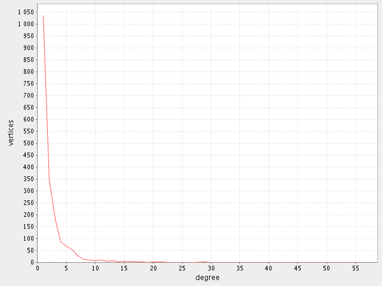

software for testing a random walk
Graph analysis
A graph analysis is very important for determining a graph structure. We can study different kinds of graphs. For example those respecting the power law or graphs having a scale-free structure. A graph analysis produces several data files. You can read more here (in the section Graph analysis) about produced data files.
We will analyze this graph (yeast.graph). It is a protein interaction network and it is undirected. Let's start the analysis:
rwtester -mode analyze -input yeast.graph -template yeast
An option -mode has the value analyze which means
we want to analyze the graph given by the option -input.
Because we have used a -template option the results will be
saved to files starting their names with yeast.
Results of the analysis are these files:
Now we can run ChartGenerator by typing:
chartgen yeast_deg.txt -x degree -y vertices
This command will produce the following image
As you can see our analyzed graph seems to be a scale-free network.